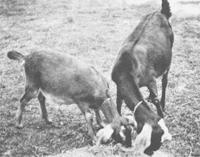

REPORT FROM THEM THAT'S DOIN'
My plan to raise goats "got off on the wrong hoof", and I have no one to blame but myself. I should have waited to buy my first doe from a reputable milk-goat breeder. After all, I had read over and over again that it's better to spend $100 on a purebred or registered goat than to pay anything for a worthless cull (who'll cost a bundle in feed and care and yield nothing in return). But, I had goats on the brain, saw an ad in the local classifieds, and let my natural impatience get the best of me.
Besides that, her owner made the doe sound wonderful. She was recently bred-I was told-and would grow into a full-sized milker ... a Toggenburg, no less! It took me five long months to realize that she wasn't going to have any kids ... and that as likely as not she'd never even been bred. It also became increasingly obvious as time went on that Nanny-as I named her-was stunted, and that her claim to Toggenburg ancestry was very loosely based (maybe her mother had once been frightened by one). Worst of all, despite months of patient cajoling, Nanny remained so flighty that I could barely approach her. The term "domestic animal" fit neither her temperament nor her purpose.
But, since I'm not a person who gives up easily, I decided to look for a buck to service the doe. All of my reference volumes noted that it's foolish for a farmer without a large herd to purchase a buck, so I combed the area for a Toggenburg at stud. I couldn't find one anywhere, but I did locate a buck of that breed for sale. Chalk up mistake number two ... I brought the handsome golden-maned lover home. As the months went by, though, it began to seem that Billy's rut odor was just so much B.O. to my Nanny ... she spurned his advances time and time again.
So, I called the vet and was told that my prudish doe was sexually underdeveloped, but that there was an injection that might bring her into heat. Nanny apparently didn't like the idea, because she escaped on the way to the clinic and I never saw her again. I confess that-though she'd cost me a good bit of money by that timeI was more relieved than sad to see her go.
Billy, on the other hand, turned out to be a marvelous goat. We cavorted together for hours at a time, like a Couple of kids. Unfortunately, the buck wasn't able to give milk to pay for his keep, and so-with what was by now a grim determinationI set out to find a real Toggenburg doe. Finally, after I'd driven most every back road in Mississippi, I located one of the lovely ladies ... and was told that she'd been bred the previous month. By that time I didn't even care that Billy's services wouldn't be needed right away. I bought New Nanny and just figured that my buck would get his chance after the kids were born. I suppose I should have noticed that there weren't many Toggenburgs around my area, but I didn't. So much for mistake number three.
Eight weeks after I brought the new doe home, I walked out one day to find that Billy had clambered into the narrow milking stanchion ... and strangled himself in his efforts to get back out. As I removed the buck's already stiffened body from the structure, I began to wonder if I was really cut out to raise goats.
But, I still had New Nanny, who was large, big-boned, and had a well-formed bag and teats ... a real milker! She was also, however, half dead from intestinal parasites and improper feed. I wormed her, stopped milking her two months prior to when She was due to kid, fed her copious amounts of grain, and let her browse in a large patch of honeysuckle and briars. With all of this care she was soon as healthy a goat as you'll ever see. Her due date, however, came and went with no sign that she was ready to bear kids. I waited and watched for two more months, in the hope that she had mated with my deceased Billy. Finally, I had to accept the fact that her bulge was nothing more than the result of too much feed.
It's been two years now since I bought my first goat. I recently mated New Nanny to a high-class registered Nubian buck ... but it's too soon to know whether she'll finally have kids and a new milk supply. What I do know, however, is that I've-so far-parted with over $250 for goats, feed, etc., and gained a grand total of five gallons of milk in return. That-for the mathematically minded among you works out to about $12.50 a quart!
About the only way I can get any use out of my goat-mistakes is to turn them into principles that might help other folks to do better than I did. These rules are: [1] Buy only from a conscientious breeder of milk goats (by the time you can tell whom to trust, you'll know enough so that they couldn't rip you off anyway), [2] purchase a breed that's common in your area, and [3] buy only a doe with young kids ... it's the one way to be sure of what you're gettin'.
As I attempt to boil my experiences down to the point where they might be of help to someone else, however, I get the urge simply to say, "Don't buy goats at all!" This may sound like an extreme statement, but it's at least as much the result of serious consideration as it is a product of frustration.
Think of the simplicity, for instance, that you can find in an animal-less homestead. Without beasts there's little need for outbuildings, for pasture, or-if nearby neighbors don't have problem critters-for fences (after all, these enclosures exist primarily to keep animals in or out). Perhaps even Helen and Scott Nearing considered these factors when they decided to follow a "no animals" policy on their homestead.
And, at the risk of sounding corny, doesn't the "back to the land" movement follow a somewhat spiritual path? Isn't there "spirituality" in the choice of simplicity over complexity, and in the struggle to do more with less? Do livestock really contribute to the achievement of these goals?
I think that the time is just about here when Ifor onewill feed all of the food that I grow to humans rather than to animals. Goats, I admit, make fine pets ... but we Americans have far too many Pets already. It may be that a person is "starting wrong with goats" when he or she starts with goats in the first place.
|
 |
|
|